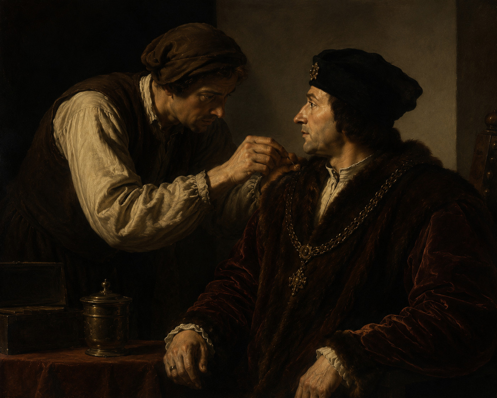

Le pou et la puce

Un serviteur aperçoit un pou qui se promène sur le vêtement du roi. Il s'incline et lève la main.
Le roi lui fait signe d’approcher.
Le serviteur retire le pou et le jette discrètement.
Le roi lui demande ce que c'était. L'homme semble embarrassé.
Le roi insiste.
Il finit par avouer qu'il s'agissait d'un pou.
— Voilà un excellent signe. Cette vermine s'attaque surtout aux hommes, et particulièrement lorsqu'ils sont jeunes.
Il ordonne qu'on donne quarante couronnes au serviteur.
Quelque temps plus tard, un autre serviteur, voyant la récompense obtenue, saisit sa chance.
Il s’incline à son tour et fait le même geste de la main.
Le roi l’invite à s’approcher.
L'homme enlève quelque chose du vêtement royal, puis le jette aussitôt.
Le roi veut savoir ce que c'était.
L'homme feint d'abord la gêne, comme son prédécesseur, puis finit par répondre :
— Une puce.
— Quoi ! Me prends-tu pour un chien ?
Et, au lieu de quarante couronnes, il ordonne qu'on lui donne quarante coups de bâton.
(D'après Érasme, Convivium fabulosum, vers 1523-1524)
adapté par Frodric
Serviteur : personne qui travaille au service d'une autre.
S'incliner : se pencher pour montrer du respect.
Vermine : petits animaux nuisibles, comme les poux ou les puces.
Couronnes : anciennes pièces de monnaie.
Feindre : faire semblant.
Prédécesseur : personne qui était là avant une autre.
À propos de ce conte
Cette histoire apparaît au début du XVIᵉ siècle dans le Convivium fabulosum (Le Banquet des conteurs) du grand humaniste Érasme.
Celui-ci l'attribue au roi de France Louis XI, sans préciser d'où il la tient.
On ignore donc si cette anecdote s'est réellement produite ou si elle faisait déjà partie des histoires populaires racontées à la cour du roi.